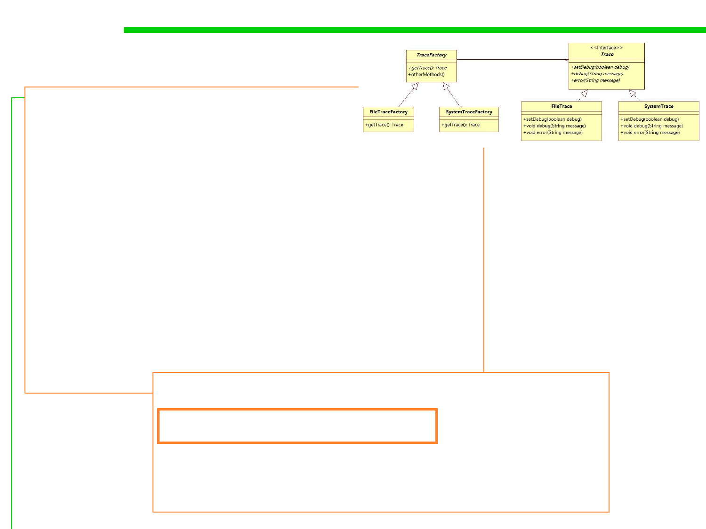

Example
public abstract class TraceFactory {
public abstract Trace getTrace();
//other methods…
}
6.2 Design Patterns for Maintainability
public class SystemTraceFactory extends TraceFactory {
public Trace getTrace() {
… //other operations
return new SystemTrace();
}
}
public class FileTraceFactory extends TraceFactory {
public Trace getTrace() {
return new FileTrace();
}
}
//... some code ...
TraceFactory traceFactory = new SystemTraceFactory();
Trace log = traceFactory.getTrace();
log.debug("entering log");
traceFactory = new FileTraceFactory();
log = traceFactory.getTrace();
log.debug("...");